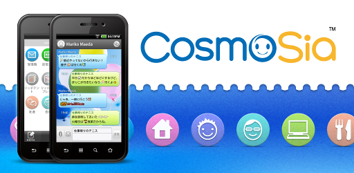

Thank you for the installation.
It is only CosmoSia that can carry out a decoration in a chat mode.
CosmoSia works lightly and is easy-to-use! and you can change look and feel! The basic functions are enhancement.
Thank you for your help.
© 2011-2016 ACCESS CO., LTD. All rights reserved.